Word Count: 2840
Discharge data from the Okavango River in Southern Africa was utilised in this study to understand potential change to the river regime under different scenarios.
The study analyses a 2oc projected global temperature rise across 7 General Circulation Models (GCMs) from CMIP3 over a 30-year period, and a varying temperature
rise from 1oc to 6oc using HadCM3 specifically. A form of Environmental Flows (eFlows) known as Indicators of Hydrological Alteration (IHAs) were applied to this
data to understand how the river regime would be altered from its historical baseline. The frequency and magnitude of both low flows and high flows exhibited
variation across the GCMs with overall increases and decreases projected to the discharge depending on the selected GCM. This uncertainty raises questions
concerning the validity of selecting only HadCM3 to project future warming scenarios as it predicts an overall reduction in discharge for both low and high flows.
With the Okavango River in particular, it is important to understand this variance especially in high flow conditions as the Okavango Delta is highly reliant on
the seasonal flooding to maintain its ecological diversity.
My Role: Researcher
Water scarcity is an issue faced by numerous communities around the world, but particularly in south western Africa. This arid and semi-arid region forces a
heavy reliance on the water resources available for both basic human needs, and long-term societal development. The Okavango River is one of the largest water
resources in this region. It is a transboundary system that runs through three countries beginning in the highlands of southern Angola as two tributaries, the
Cubango and the Cuito, and then traversing through the arid regions of Namibia and finally opening out into the Okavango delta in Botswana.
Under an NERC-funded QUEST-GSI project, a range of climate scenarios were applied to multiple basins including the Okavango. Seven General Circulation Models (GCMs)
for a 2oc global temperature increase scenario, and 6 varying global temperature rise scenarios for one selected GCM were used to provide potential changes to the
river discharge. Using a form of Environmental Flows (eFlows) assessment, a series of Indicators of Hydrological Alteration (IHA) have been applied to this discharge
data, to understand key characteristics of the river regime and the potential magnitude of impact of future warming scenarios in the Okavango. In particular, the low
flow characteristics which are of importance to the communities along the stream, and the high flows that are critical to the flooding at the delta. Furthermore,
the variability across the GCMs and implications of GCM choice were assessed.
The Okavango basin is a large transboundary system that extends through three nations in Southern Africa. In Angola, two rivers known as the Cubango and the Cuito
both converge with other tributaries into the Okavango river just before entering Namibia. It then flows through Namibia and opens up into the Okavango delta in
north western Botswana (Fig. 1). This basin is one of the larger Ramsar sites at over 700,000 km2 (West et al., 2015) and has been identified as being of significant
importance due its role in aiding surrounding communities in meeting Sustainable Development Goals (SDGs) (Russi et al., 2013; Ramsar, 2019).
The river has a highly seasonal precipitation cycle, with a singular wet season between October and March as shown in Fig. 2, which causes extensive flooding at the
Okavango delta wetland, the second largest inland wetland in the world. (Hughes et al., 2010). This cyclic flooding creates a highly biodiverse environment that is
home to a variety of species.
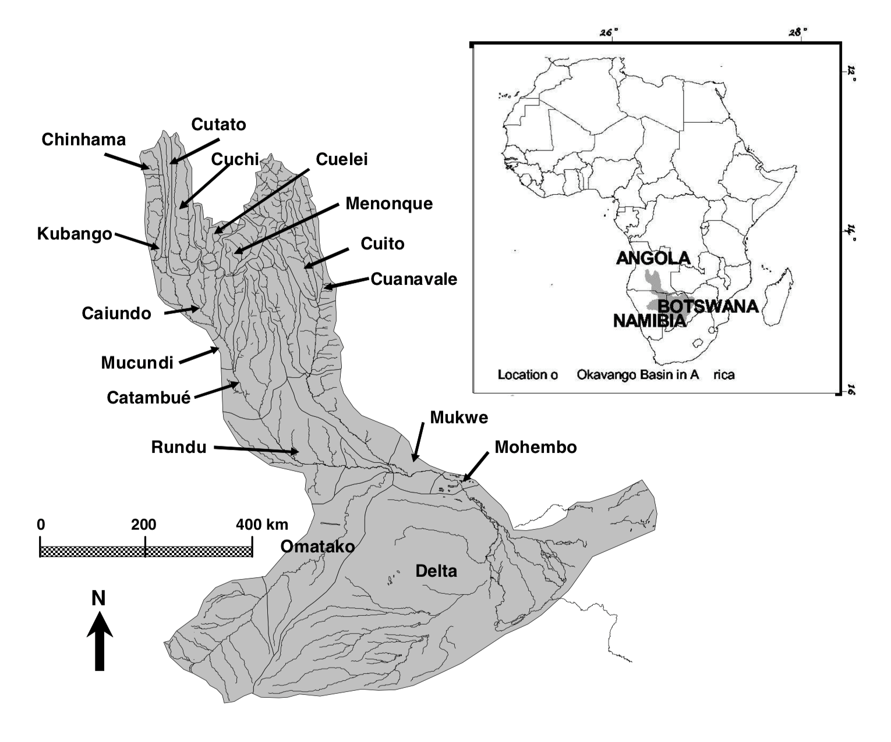 Figure 1: The Okavango River and the surrounding basin
Source: Hughes et al., 2011
Due to its transboundary nature, significant contribution of water resources and ecological value in the region, the Okavango basin has been identified as an area of potential water conflict (Wolf et al., 2003). Since the end of the Angolan civil war in 2002, the state has been looking for routes to stabilise to help bring a number of its communities out of poverty. One strategy would be to tap into the potential hydropower of the river system through the construction of dams which could have dramatic consequences to the annual flooding and water supplies further downstream (Andersson et al., 2006; Pinheiro et al., 2003). At the delta, the flooding is an important factor in the ecological function of the site (Wolski et al., 2006; Wolski and Murray-Hudson, 2008) and is a major tourist attraction, contributing to economic growth in Botswana. With multiple communities also relying on the water resources provided by the river for irrigation and their livelihoods, the Permanent Okavango River Basin Water Commission (OKACOM) was established in 1994 so that the 3 riparian states could negotiate and coordinate the best possible uses of the water resources to meet the socio-economic demands of the developing nations, without unfairly disadvantaging one another, and doing so in the most sustainable manner.
Whilst the Okavango is at risk of change from direct anthropogenic causes, there are concerns that potential future climate change could have additional adverse effects
on the hydrological regime. It is generally accepted that anthropogenic greenhouse gas emissions since the pre-industrial era have been contributing to a change in climate
around the globe. Understanding the extent of this impact at a smaller and more focused scale is vital to ensuring the Okavango can be managed effectively.
At a GCM level, there tends to be a high degree of uncertainty in the results due to limitations in calibrations and validation procedures, and the overall scale at
which the model is designed to run. However, risk analysis and adaption will typically occur at a basin-scale, to achieve a better understanding of the state of the
water resources at the specific site to implement context-appropriate strategies.
As part of an NERC-funded QUESTS-GSI project, a selection of future climate scenarios were used to assess the impacts of climate change on river discharge at the basin
scale (Todd et. al, 2011). The project used climate projections from 7 GCMs (CCCMA, CSIRO, IPSL, MPI-ECHAM5, NCAR-CCSM3, HadCM3, HadGEM) based on a 2oc warming scenario
to assess the range of possible responses. Furthermore, HadCM3 was used with increasing increments of 1oc from 1oc to 6oc. Importantly, for each of these scenarios an
ensemble of 1000 simulations were carried out to cover uncertainty within specific parameters in the Pitman hydrological model. These models were applied to a number of
well-established basin sites, that had adequate historical baseline data including the Okavango at Mukwe in Namibia which had historical monthly discharge data from 1961-1990 inclusive.
Environmental Flows (eFlows) can be described as ‘the quality, quantity, and timing of water flows required to maintain the components, functions, processes, and resilience
of aquatic ecosystems which provide goods and services to people.’ (Forslund et al., 2009). One prescriptive desktop method for understanding eFlows uses the Range of
Variability Approach (Richter et al. 1997) and employs Indicators of Hydrological Alteration (IHAs). The IHAs act as indices that rely on the fundamental principle that
all characteristics of a river flow regime are ecologically significant, not just the minimum baseline flow. The selected indicators are outlined in Table 1.
IHAs were applied to the historical data covering a 30-year period from 1961 to 1990 inclusive to understand the baseline characteristics of the river. They were then
applied to the projected discharge covering 30 years from 2040 to 2069 for the 2oc warming scenario across seven GCMs, and the increasing warming scenarios for HadCM3.
These scenarios were then compared to the baseline data and methods. According to Laizé et al. (2010) a modified river regime is defined as one which deviates by at least
30% from the baseline, and at least one month with respect to the mode of monthly timings.
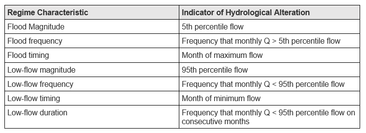 Table 1: The selected regime characteristics and their respective IHAs
The baseline data was plot alongside the projected data over the two respective 30-year periods overlaid onto one another, for the seven GCMs (Appendix A) and the six projected climate scenarios (Appendix B). Appendix A shows a range of variability in the magnitude of discharge for the different GCMs, and that projections at 2oc follow the same seasonal hydrological cycle as the historical data. However due to the density of the data, it can be challenging to see how the GCMs compare, as such monthly averages were calculated for each GCM and shown in Fig 2. Two GCMs (CCCMA and NCAR) exhibit a clear increase in monthly discharge under a 2oc warming scenario, two GCMs (HadCM3 and CSIRO) show a general decrease in monthly discharge, with the remaining GCMs predicting monthly discharge of a similar or slightly reduced magnitude to the baseline data.
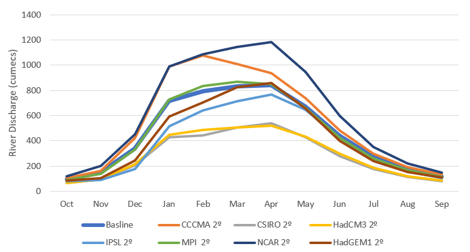 Figure 2: Monthly discharge averages of the 7 GCMs projections under a 2c warming scenario in comparison to historical baseline
Appendix B shows the change in discharge of warming scenarios with increasing intensity using HadCM3. Generally, the seasonal hydrological cycle remains the same,
with increasing temperature rise leading to decreases in river discharge. Note that there is also a spike at the 203rd month (Dec 2056) where the 6oc warming scenario
has a much higher discharge than the others modelled.
In order to better understand the impacts on the river regime under the modelled scenarios, flow duration curves (FDCs) were plotted.
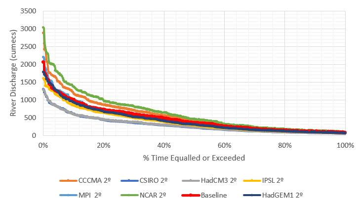 Figure 3: Flow Duration Curve for the 7 GCMs projections under a 2c warming scenario in comparison to historical baseline
Generally, similar trends are observed as with the monthly averaged flows in Fig. 3. NCAR and CCCMA demonstrate increased flow, HadCM3 and CSIRO demonstrate reduced flow, and the remaining GCMs follow the trend of the baseline data. The upper and lower bounds of the FDC were also plotted, for more granularity at the higher and lower flows as shown in Fig. 4 and Fig. 5 respectively.
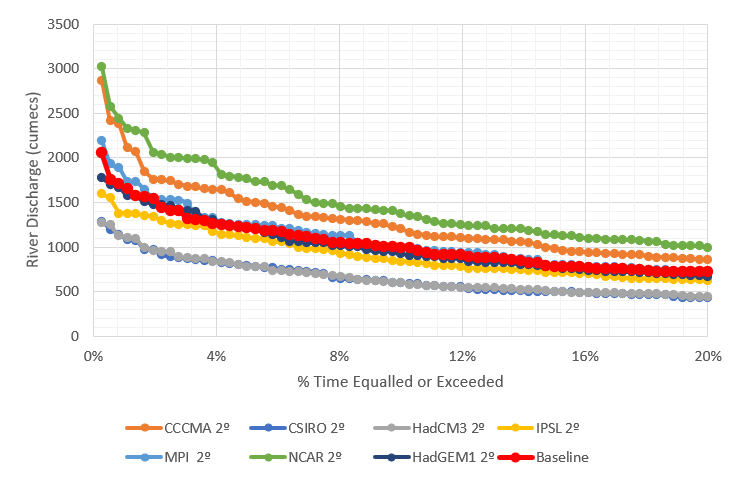 Figure 4: The high flows of the 7 GCMs projections under a 2c warming scenario in comparison to historical baseline
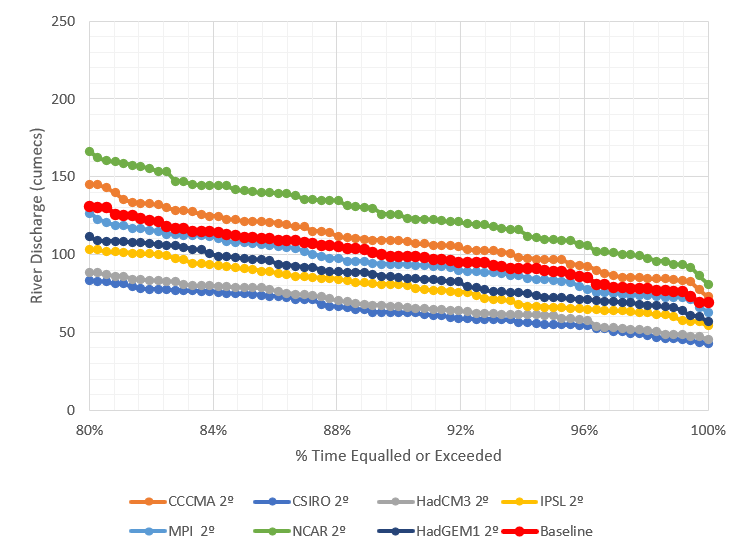 Figure 5: The low flows of the 7 GCMs projections under a 2c warming scenario in comparison to historical baseline
At the higher flows, the same groupings apply to change observed in flow, however at the lower flows, all GCMs except NCAR and CCCMA exhibit a decrease below the baseline.
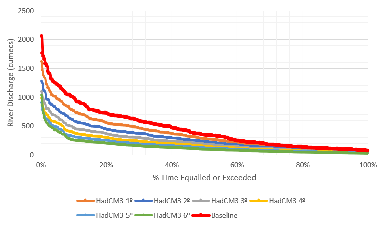 Figure 6: Flow Duration Curve of HadCM3 projections for multiple future warming scenario in comparison to historical baseline
The FDCs for the future warming scenarios were also plotted, with the complete plot in Fig. 6, and subsections of the upper and lower bounds in Fig. 7 and 8 respectively.
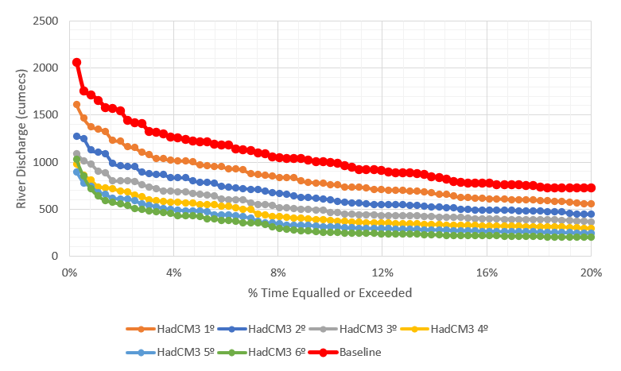 Figure 7: The high flows of HadCM3 projections for multiple future warming scenario in comparison to historical baseline
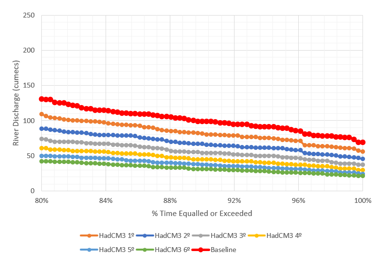 Figure 8: The low flows of HadCM3 projections for multiple future warming scenario in comparison to historical baseline
The overall flow is reduced with each increasing temperature rise scenario, as well as exhibiting the anomalous flow increase from 2056 under a 6oc future warming scenario.
The low flows also show a progressive decrease under increasing warming scenarios.
In general, the FDCs show that the modelled scenarios across both the selection of models and warming scenarios exhibit a similar pattern to the historical baseline.
The steep curve in the high flow region supports the seasonal flood regime of the Okavango, with the shallow low flow region indicating that that the river can support
some continuous flow throughout the year.
As described previously, the IHAs were applied to the baseline discharge data and the projected discharge under the future warming scenarios across the GCMs. As the minimum and maximum data from the ensemble output of the parameterised hydrological model was available, these too were analysed to determine if there was any variation in the IHAs across the min, max and median. Table 2 shows the river characteristics for the baseline data, the various GCMs, and the increased warming scenarios for the median, with the max and min shown in Appendix C and D respectively. As per the criteria of Laizé et al (2010) where a 30% deviation from baseline is considered significant, changes have been highlighted in orange for a 30% increase from baseline, blue for a 30% decrease from baseline and yellow, for a change in monthly timings greater than 1 month.
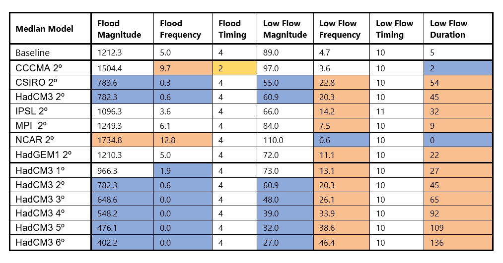 Table 2: The IHAs applied to the available median discharge data, with orange representing a significant increase, blue a significant decrease and yellow a change of more than 1 month
There is little difference across the min, max and median models, with only the only change in the IHA from IPSLs flood frequency dropping slightly. In general, the CCCMA model exhibits an altered flood timing from baseline data and all other projections, which can also be seen in Fig. 2 with the offset peak river discharge in February. As shown in the previous figures for the GCMs, CSIRO and HadCM3 exhibit lower discharge with reductions in the flood magnitude, low flow magnitude and flood frequency, and an increase in low flow frequency and duration. Inversely NCAR predicts increases in flood magnitude and flood frequency, with a decrease in low flow frequency and low flow duration. CCCMA also exhibits an increase in flooding, with a reduction in low flow duration but a non-altered low flow frequency.
There is a large variation in IHAs between the selection of models, with several displaying significant deviation away from the baseline data. In general, the
timing of the hydrological regime remains consistent with flooding occurring around April and the low flows occurring between October and November. Under a 2oc
warming scenario, most of the models (5 out of 7) predict an increase in low flow characteristics for the Okavango. This reduction in discharge has potential to
impact the communities that rely on the river for their livelihood, particularly if planned dams are constructed, potentially exacerbating the issue. Whereas the
biodiversity at the delta is heavily reliant on the high flows from flooding, for example the nutrient influx from flooding can help spur ecological development (Mosepele et al., 2009).
Changes increases in high flows could also impact the surrounding communities with unexpected flooding
However, the high flows show greater deviation across modelled outputs, with a split between a significant increase, a significant decrease and no significant change across models
for flood characteristics. This spread highlights the uncertainty between GCMs as to their ability to characterises the high flows accurately, highlighting potential drawbacks to
a single GCM selection for the multiple future warming scenarios model.
Fig. 9 shows the hydrological regime for the historical baseline monthly average discharge (red), the monthly average discharge of all models predicting 2oc warming scenarios (blue),
95% confidence interval for projections (blue error bars) and the monthly average min/max discharge from the parametrisation of the hydrological model. The average of the models shows
a drop below the baseline flow, however the bigger range around this baseline highlights how the selection of a single model such as HadCM3 for the increasing warming scenarios may not
be fully representative of the future.
The scale of the model is also of interest, as the basin covers an area of 700,000 km2, and the original Pittman model was developed for the smaller sub-basin around the Rundu
(Hughes et al., 2011) of around 95,000 km2 in order to estimate the discharge at Mukwe. This was largely due to historical data availability and restrictions in the calibration process.
Whilst this sub-basin is of a reasonable size to be covered by the cell resolution in a GCM, if data is available it would be beneficial to cover the full basin for a potentially more
representative output of the whole area, and what potential impacts there are along the river and at the delta.
There is also the anomalous spike for the 6oc HadCM3 that is unexplained. Whilst the remainder of the data shows a general decrease in overall flow with the progressive temperature
increase from 1oc to 6oc, the monthly average for December 2056 has a progressive increase in flow with temperature increase. This anomaly can be seen in the high flow range of the
FDC in Fig. 7 and has been kept in the dataset for all graphs.
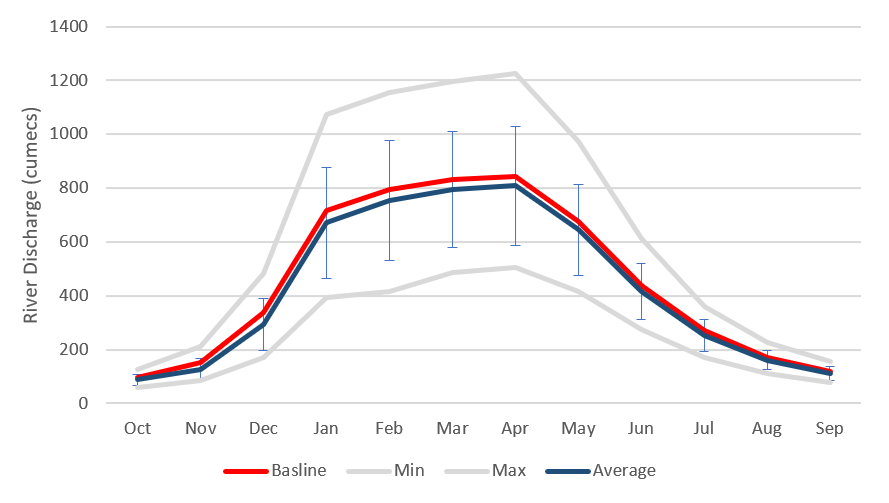 Figure 9: The high flows of HadCM3 projections for multiple future warming scenario in comparison to historical baseline
In regard to model selection, it’s important to note the age of the original study. The selected models were part of the CMIP3, the 3rd phase of the Coupled Model Intercomparison Project
(CMIP) roadmap, that were used in the IPCC Fourth Assessment Report (AR4). Since then, there has been significant development in the CMIP framework, with CMIP5 implementing models for
the IPCC Fifth Assessment Report (AR5), and currently CMIP6 models are being run for the IPCC Sixth Assessment Report (AR6).
Table 3 shows the various institutions and the models used in CMIP3, CMIP5 and CMIP6. Most models have seen at least one iteration or update since the original set used in CMIP3,
indicating that a potentially more accurate cohort of GCMs have been developed. Whilst CMIP6 is currently being run with modelled data being actively submitted for the October 2020
deadline, from the resources available, it appears HadCM3 has not been included (ESGF CMIP6, 2020). However, HadCM3 is still being routinely used in other research, for example through
the second phase of the Pliocene Model Intercomparison Project (Hunter et al., 2019).
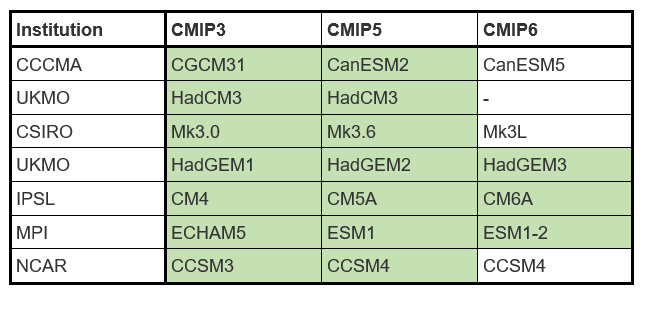 Table 3: The progression of models used in CMIP phases from the relevant institutions used originally in CMIP3. Green highlights models which have submitted data to date (May, 2020)
It’s clear that the discharge of the Okavango is vital to the ecosystem at the delta as well as communities within the basin. From the projections of increased warming, it could be possible to draw conclusions of the consequences from higher global temperature on risk of reduced flow in the Okavango. However, it’s also evident that there is a great deal of uncertainty from these models from the spread of monthly discharge under the same future 2o>c scenarios particularly at the high flows which are crucial to the routine flooding. Furthermore, there have been updates to the original GCMs used to force the hydrological model. It would be beneficial to utilise the updated and calibrated models for a better understanding of how the Okavango could be affected by future warming scenarios, thus enabling the states involved to better negotiate how to sustainably manage the water resource available.
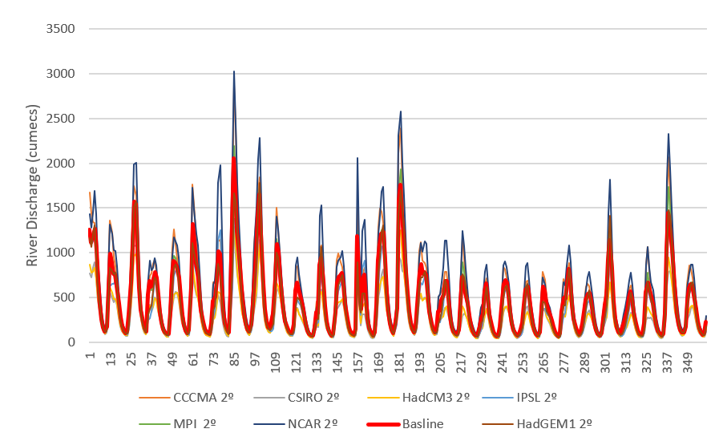 Appendix A: Monthly flows for historical baseline data and projected discharge for 2oc warming scenarios across 7 GCMs over 30 years
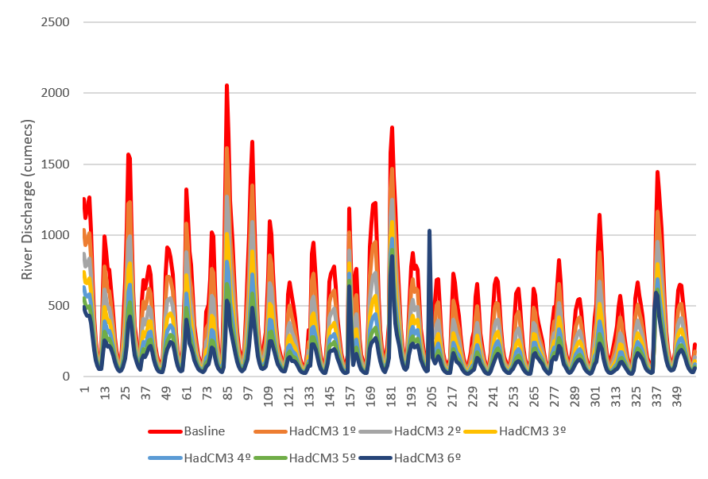 Appendix B: Monthly flows for historical baseline data and projected discharge for multiple warming scenarios using HadCM3 over 30 years
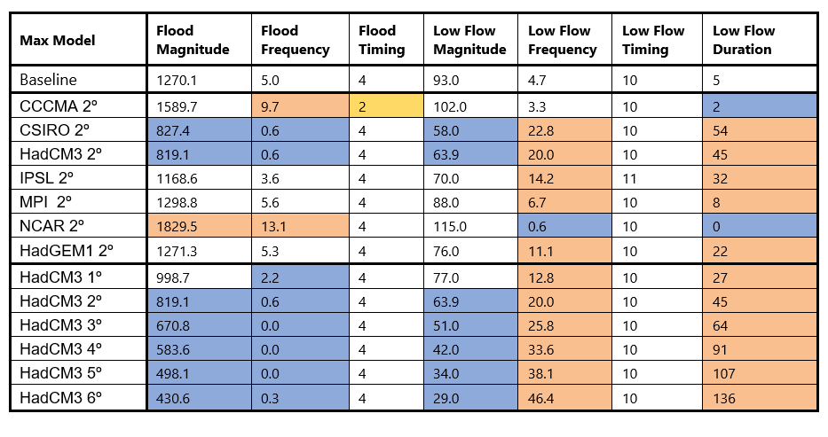 Appendix C: The IHAs applied to the available discharge max data, with orange representing a significant increase, blue a significant decrease and yellow a change of more than 1 month
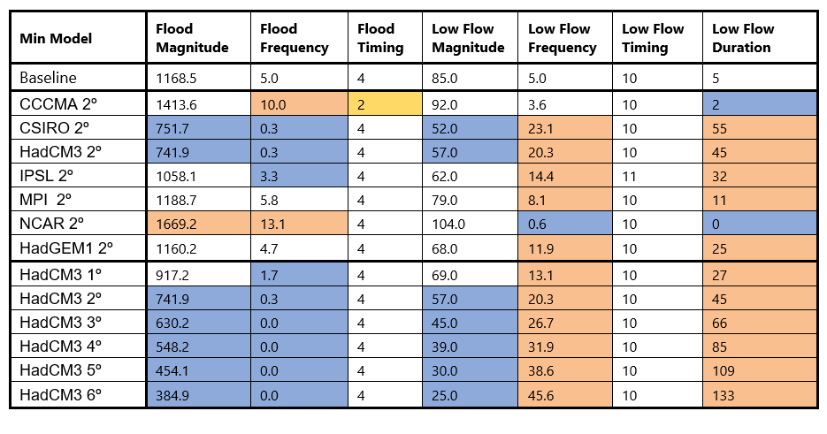 Appendix D: The IHAs applied to the available discharge min data, with orange representing a significant increase, blue a significant decrease and yellow a change of more than 1 month
‘The List of Wetlands of International Importance’, Secretariat of the Convention on Wetlands, 18 October 2019, at 10, available at www.ramsar.org/sites/default/files/documents/library/sitelist.pdf (accessed 19 February 2019)
D. T. West, J. G. van As and L. L. van As, ‘Surface Water Quality in the Okavango Delta Panhandle, Botswana’, (2015) 40(4) African Journal of Aquatic Science 359.
D. Russi et al., The Economics of Ecosystems and Biodiversity for Water and Wetlands (2013)
Wolf, A. T., Yoffe, S. B. and Giordano, M.: International waters: in- dicators for identifying basins at risk, UNESCO-IHP-VI, Tech- nical Documents in Hydrology, PC-CP Series, No. 20, 30 pp., 2003
Pinheiro, I., Gabaake, G., and Heyns, P. L.: Cooperation in the Okavango River Basin: the OKACOM perspective, in: Trans- boundary Rivers, Sovereignty and Development: Hydropolitical Drivers in the Okavango River Basin, African Water Issues Re- search Unit/Green Cross International/Univ. of Pretoria, edited by: Turton, A., Ashton, P., and Cloete, E., Pretoria, South Africa, 105–118, 2003
Andersson, L., Wilk, J., Todd, M. C., Hughes, D. A., Earle, A., Kniveton, D., Layberry, R., and Savenije, H. H. G.: Impact of climate change and development scenarios on flow patterns in the Okavango River, J. Hydrol., 331, 43–57, 2006
Wolski, P. and Murray-Hudson, M.: Alternative futures of the Oka- vango Delta simulated by a suite of global climate and hydro- ecological models, Water SA, 34, 605–610, 2008.
Wolski, P., Savenije, H. H. G., Murray-Hudson, M., and Gum- bricht, T.: Modelling of the flooding in the Okavango Delta, Botswana, using a hybrid reservoir-GIS model, J. Hydrol., 331, 58–72, 2006
Todd, M. C., Taylor, R. G., Osborn, T. J., Kingston, D. G., Arnell, N. W., and Gosling, S. N.: Uncertainty in climate change impacts on basin-scale freshwater resources – preface to the special issue: the QUEST-GSI methodology and synthesis of results, Hydrol. Earth Syst. Sci., 15, 1035–1046, https://doi.org/10.5194/hess-15-1035-2011, 2011
Mogomotsi, G., Mogomotsi, P., & Mosepele, K. (2020). Legal aspects of transboundary water management: An analysis of the intergovernmental institutional arrangements in the Okavango River Basin. Leiden Journal of International Law, 33(2), 391-408. doi:10.1017/S0922156519000736
D.L. Kgathi, D. Kniveton, S. Ringrose, A.R. Turton, C.H.M. Vanderpost, J. Lundqvist, M. Seely,
The Okavango; a river supporting its people, environment and economic development,
Journal of Hydrology, Volume 331, Issues 1–2, 2006, Pages 3-17, ISSN 0022-1694, https://doi.org/10.1016/j.jhydrol.2006.04.048
Mbaiwa, J.E., 2004. Causes and possible solutions to water resource conflicts in the Okavango River Basin: the case of Angola, Namibia and Botswana. Physics and Chemistry of the Earth, Parts A/B/C, 29(15-18), pp.1319-1326.
Pinheiro, I., Gabaake, G. and Heyns, P., 2003. Cooperation in the Okavango River Basin: the OKACOM perspective. Transboundary rivers, sovereignty and development: Hydropolitical drivers in the Okavango River Basin, pp.105-118.
Andersson, L., Wilk, J., Todd, M.C., Hughes, D.A., Earle, A., Kniveton, D., Layberry, R. and Savenije, H.H., 2006. Impact of climate change and development scenarios on flow patterns in the Okavango River. Journal of Hydrology, 331(1-2), pp.43-57
Turton, A.R., Ashton, P. and Cloete, E., 2003. Hydropolitical drivers and policy challenges in the Okavango River basin. Transboundary rivers, sovereignty and development: Hydropolitical drivers in the Okavango river basin, pp.353-368.
Program for Climate Model Diagnosis and Intercomparison, viewed 2nd May 2020,
Hunter, S.J., Haywood, A.M., Dolan, A.M. and Tindall, J.C., 2019. The HadCM3 contribution to PlioMIP phase 2. Climate of the Past, 15(5), pp.1691-1713.
Hughes, D.A., DG Kingston, D. and Todd, M.C., 2011. Uncertainty in water resources availability in the Okavango River basin as a result of climate change. Copernicus Publications.
Forslund, A., Renöfält, B.M., Barchiesi, S., Cross, K., Davidson, S., Farrell, T., Korsgaard, L., Krchnak, K., McClain, M., Meijer, K. and Smith, M., 2009. Securing water for ecosystems and human well-being: The importance of environmental flows. Swedish Water House Report, 24.
Richter, B., Baumgartner, J., Wigington, R. and Braun, D., 1997. How much water does a river need?. Freshwater biology, 37(1), pp.231-249.
Mosepele, K., Moyle, P.B., Merron, G.S., Purkey, D.R. and Mosepele, B., 2009. Fish, floods, and ecosystem engineers: aquatic conservation in the Okavango Delta, Botswana. Bioscience, 59(1), pp.53-64.